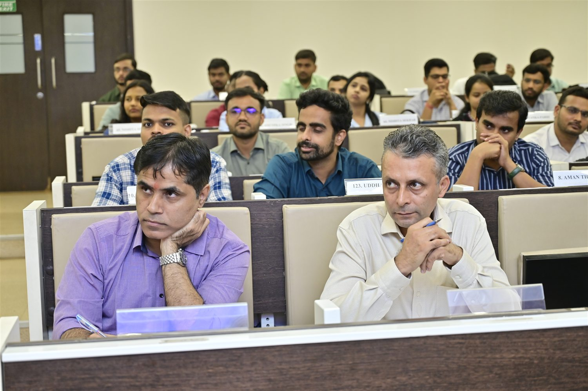

Albums / Beyond the classroom
Cultural activities
Hindi Diwas
Language, culture, and performances by the batch.
Inside this chapter
A place in our shared story.
Language, culture, and performances by the batch. This collection brings the photographs together so the batch can revisit the experience, frame by frame.
- Language and expression
- The batch takes part
- A day of shared culture
From our yearbook